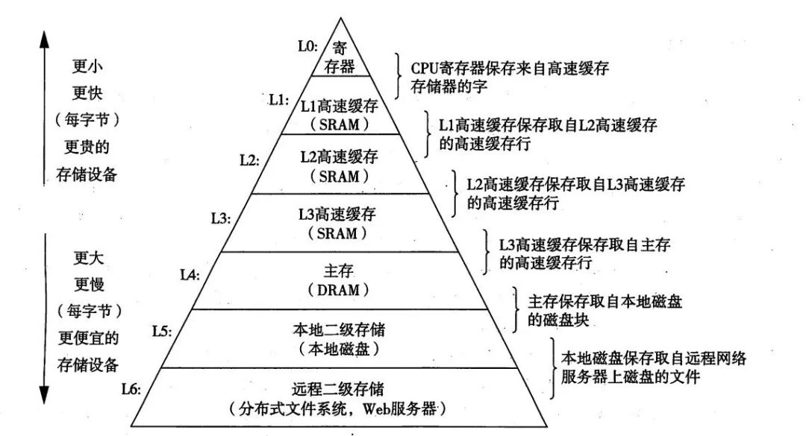

摘要：计算机基础之操作系统，包括进程管理（进程调度、进程切换、进程同步、进程通信），死锁，内存管理与调度（虚拟内存、内存管理机制、页面置换算法），设备管理等。
[TOC]
操作系统：是管理计算机硬件与软件资源的程序，向上对用户程序提供接口，向下负责管理硬件资源。
操作系统基本功能：
用户程序运行在用户态，操作系统内核运行在内核态。
同步中断和异步中断？
CPU从用户态切换到内核态的方法有三种：
外部中断：由 CPU 执行指令以外的事件引起，如 I/O 操作完成中断，表示设备输入/输出处理已经完成，CPU 能够发送下一个输入/输出请求。此外还有时钟中断、控制台中断等。处理器外设的状态变化，是硬中断。
内部中断（异常）：由 CPU 执行指令的内部事件引起，如非法操作码、地址越界、算术溢出等。由错误引起的，如文件损坏、缺页故障等。
陷入：在用户程序中使用系统调用，进程在用户态需要使用内核态的功能。系统调用是一种软中断。
系统调用：进程在用户态需要使用内核态的功能，就进行系统调用从而陷入内核，由操作系统代为完成。
Linux 的系统调用主要有以下这些：
| Task | Commands |
|---|---|
| 进程控制 | fork(); exit(); wait(); |
| 进程通信 | pipe(); shmget(); mmap(); |
| 文件操作 | open(); read(); write(); |
| 设备操作 | ioctl(); read(); write(); |
| 信息维护 | getpid(); alarm(); sleep(); |
| 安全 | chmod(); umask(); chown(); |
进程：程序的一次执行。是系统资源分配的基本单位。（Windows 任务管理器查看，.exe 文件的运行）
线程：进程中的一个执行任务（控制单元），负责当前进程中程序的执行。线程是CPU任务调度和执行的基本单位。
区别：
进程调度：操作系统（根据一定的调度算法），（从就绪态的进程队列中）选择一个进程来占用CPU资源的决策过程，使其执行。
进程切换：从一个正在执行的进程切换到另一个就绪态的进程的实际执行过程。
对比：
进程调度的触发时机主要有以下几种情况：需要切换到下一个（就绪）进程来占用CPU资源时，会触发进程调度。
进程切换的触发时机：主要是在进程调度过程中，当操作系统决定要切换到一个新的进程时，就会进行进程切换。
不同环境的调度算法目标不同，因此需要针对不同环境来讨论调度算法。
批处理系统没有太多的用户操作，在该系统中，调度算法目标是保证吞吐量和周转时间（从提交到终止的时间）。
交互式系统有大量的用户交互操作，在该系统中调度算法的目标是快速地进行响应。

实时系统要求一个请求在一个确定时间内得到响应。
分为硬实时和软实时，前者必须满足绝对的截止时间，后者可以容忍一定的超时。
进程切换：从一个正在执行的进程切换到另一个就绪态的进程的实际执行过程。
注意：

进程切换时操作系统都会发生什么？
当操作系统决定切换到某个新的进程时，

进程的控制结构：PCB 进程控制块、程序段、数据段。
进程控制块（Process Control Block, PCB）：描述进程的基本信息和运行状态，是进程存在的唯一标识。所谓的创建进程和撤销进程，都是指对 PCB 的操作。
进程同步与进程通信很容易混淆，区别在于：
进程通信是一种手段，而进程同步是一种目的。也可以说，为了能够达到进程同步的目的，需要让进程进行通信，传输一些进程同步所需要的信息。
同步与互斥：
临界资源：
临界区（Critical Section）：对临界资源进行访问的那段代码称为临界区。加锁和解锁之间的代码块。
使用信号量实现
问题描述：使用一个缓冲区来保存物品，只有缓冲区没有满，生产者才可以放入物品；只有缓冲区不为空，消费者才可以拿走物品。
为了同步生产者和消费者的行为，需要记录缓冲区中物品的数量。数量可以使用信号量来进行统计，这里需要使用两个信号量：
empty 记录空缓冲区的数量，在生产者进程中使用；当 empty 不为 0 时，生产者才可以放入物品；full 记录满缓冲区的数量，在消费者进程中使用；当 full 信号量不为 0 时，消费者才可以取走物品。错误解法：如果所有哲学家同时拿起左手边的筷子，那么所有哲学家都在等待其它人吃完、并释放自己手中的筷子，导致死锁。
为了防止死锁的发生，可以设置两个条件：

允许多个进程同时对数据进行读操作，但是不允许读和写、以及写和写操作同时发生。
进程通信、IPC 进程间通信：进程间传输信息。进程通信是一种手段，而进程同步是一种目的。为了能够达到进程同步的目的，需要让进程进行通信，传输一些进程同步所需要的信息。
独立进程：不与任何其他进程共享数据的进程；
协作进程：与其他进程共享数据的进程。
每个进程各自有不同的用户地址空间，任一进程的全局变量在另一进程中都看不到，协作进程间交换数据必须通过内核。
Pipes）：用于有亲缘关系的父子或兄弟进程间的通信；只支持半双工通信（单向交替传输），数据只能单向流动，存在于内存中的文件。Names Pipes） : 去除了管道只能在父子进程中使用的限制。用于任意两个进程通信。严格遵循先进先出，以磁盘文件的方式存在。常用于在客户进程和服务器进程之间传递数据。Signal） ：用于通知接收进程某个事件已发生。Semaphores）：本质是一个计数器，用于记录资源能被多少个进程同时访问，用来实现进程之间的互斥与同步，是为了解决共享内存通信方式造成的进场安全问题。解决进程同步相关的问题并避免竞争条件。Message Queuing）：通过在协作进程间交换消息来实现通信。多个不相干的进程可以通过一个消息队列来传递数据。是消息的链表，存放在内存/内核中。Sockets)）: 用于不同机器间的进程通信。用于在客户端和服务器间的网络通信，是支持 TCP/IP 的网络通信的基本操作单元。见多线程。
死锁：指多个进程/线程因争夺有限的资源或彼此通信而造成互相等待（阻塞），若无外力作用，都将无法推进下去。
活锁：任务或执行者没有被阻塞，由于某些条件没有满足，导致一直重复尝试、失败。
解决死锁主要有以下四种方法：
以下四个条件同时成立，死锁才会出现：
参考：面试官：什么是死锁？怎么排查死锁？怎么避免死锁？ 中的举例和示意图
把头埋在沙子里，假装根本没发生问题。
因为解决死锁问题的代价很高，因此鸵鸟策略这种不采取任务措施的方案会获得更高的性能。
当发生死锁时不会对用户造成多大影响，或发生死锁的概率很低，可以采用鸵鸟策略。
大多数操作系统，包括 Unix，Linux 和 Windows，处理死锁问题的办法仅仅是忽略它。
死锁检测/定位/排查：jdk 自带的
jps 或系统的 ps 命令、任务管理器等工具，输出 JVM 中运行的进程状态信息，如 进程 id。jstack 工具获取线程栈： 线程堆栈分析工具。查看日志，检查是否有死锁。如果有，则定位相互间的依赖关系，进而找到死锁；jstack <pid>。gdb 工具进一步确认；studio 打印日志；JConsole 可在图形界面进行有限的死锁检测。打开方式：Java bin安装目录下 jconsole.exe。恢复的方法：
预防死锁：破坏四个必要条件中的任一个：
在资源分配时，借助于算法（如银行家算法）对资源分配进行计算评估，使其进入安全状态。
在程序运行时避免发生死锁。
安全状态：如果没有死锁发生，并且即使所有进程突然请求对资源的最大需求，也仍然存在某种调度次序能够使得每一个进程运行完毕，则称该状态是安全的。安全状态的检测与死锁的检测类似，因为安全状态必须要求不能发生死锁。
单个资源的银行家算法：一个小城镇的银行家，他向一群客户分别承诺了一定的贷款额度，算法要做的是判断对请求的满足是否会进入不安全状态，如果是，就拒绝请求；否则予以分配。
多个资源的银行家算法：
AB-BA 死锁问题问题背景：最常见的一种场景： 支付宝账号A向账号B转账500元。 由于支付宝有几亿用户，账户的保存采用了分库分表的方案， 账号A和账号B分别被保存在不同的数据库实例中。
过程见以上链接。
AB-BA 死锁问题：
synchronized锁A；synchronized锁B；public class Main {
public static void main(String[] args) {
new Thread(()->{ //
A.a();
}).start();
new Thread(()->{
B.b();
}).start();
}
// 静态内部类
static class A {
public static synchronized void a() {
try {
Thread.sleep(3000);
} catch (Exception e) {
e.printStackTrace();
}
System.out.println("get A.");
B.b();
}
}
// B 类相似
}
内存调度
内存管理：负责内存的分配与回收、地址转换（将逻辑地址转换为相应的物理地址）、内存寻址等。

内存模型：
Main Memory）：物理内存，虚拟机内存的一部分。内存缓存的是硬盘数据，用于解决硬盘访问速度过慢的问题。成本低，容量通常是 GB 级别，访问延迟通常在几十到几百纳秒。CPU Cache）：缓存的是内存数据，用于解决 CPU 处理速度和内存处理速度不对等的问题。通常分为三层，L1, L2, L3 Cache；具有成本高、容量小的特点，容量最大的 L3 缓存通常也只有几十MB。
CPU Cache 中，CPU 可直接从 CPU Cache 中读写数据；当运算（操作）完成后，通过缓存一致性协议将（运算得到的）数据写回主内存。用来解决多核 CPU 缓存数据一致性的问题。特点：
根据性能由高到低分为：寄存器、L1缓存、L2缓存，L3缓存，本地主内存。
内存和高速缓存都属于掉电易失的存储器，如果机器断电了，这类存储器中的数据就永久丢失了。

逻辑地址：在机器语言指令中指定操作数或一条指令的地址。
虚拟地址/线性地址：32位或64位的无符号整数。由虚拟页页号和页偏移量两部分组成。对应页式管理中，线性地址是页式管理转换前的地址。
物理地址：实际存在硬件里面的空间地址。
目的是：为了让物理内存扩充成更大的逻辑内存，从而让程序获得更多的可用内存。
原理：
表现在以下两个方面：
连续分配管理方式：为一个用户程序分配一个连续的内存空间，如块式管理（有碎片）。
非连续分配管理方式：允许一个程序使用的内存分布在离散/不相邻的内存中，如页式管理和段式管理、段页式管理机制。
内存管理单元（MMU）管理着地址空间和物理内存的转换，其中的页表（Page table）存储着页（程序地址空间）和页框（物理内存空间）的映射表。
一个虚拟地址分成两个部分，一部分存储页面号，一部分存储偏移量。
页表（Page table）存储着页（程序地址空间）和页框（物理内存空间）的映射表。
虚拟内存采用的是分页技术，也就是将地址空间划分成固定大小的页，每一页再与内存进行映射。
分段的做法是把每个表分成段，一个段构成一个独立的地址空间。每个段的长度可以不同，并且可以动态增长。
对程序员的透明性：分页透明，但是分段需要程序员显式划分每个段。
地址空间的维度：分页是一维地址空间，分段是二维的。
大小是否可以改变：页的大小不可变，段的大小可以动态改变。
出现的原因：分页主要用于实现虚拟内存，从而获得更大的地址空间；分段主要是为了使程序和数据可以被划分为逻辑上独立的地址空间并且有助于共享和保护。
程序的地址空间划分成多个拥有独立地址空间的段，每个段上的地址空间划分成大小相同的页。这样既拥有分段系统的共享和保护，又拥有分页系统的虚拟内存功能。


缺页中断：地址映射过程中，如果要访问的页面不在内存中，需要 OS 将该页调入主存后再访问。
页面置换算法：当发生缺页中断时，如果当前内存中并没有空闲页面、空闲空间，OS 必须在内存选择一个页面将其移出内存，以便为即将调入的页面让出空间。
页面置换算法和缓存淘汰策略类似，可以将内存看成磁盘的缓存。在缓存系统中，缓存的大小有限，当有新的缓存到达时，需要淘汰一部分已经存在的缓存，这样才有空间存放新的缓存数据。
页面置换算法的主要目标是：使页面置换频率最低（也可以说缺页率最低）。
淘汰页面的规则有：
Least Recently Used 最近最久未使用算法）：记录页面自上次访问以来所经历的时间 T，选择 T 值最大的。
Least Frequently Used 最少使用算法） ：随机地从类编号最小的非空类中挑选一个页面将它换出。见手撕算法

读写一个磁盘块的时间的影响因素有：
其中，寻道时间最长，因此磁盘调度的主要目标是使磁盘的平均寻道时间最短。
FCFS, First Come First Served
按照磁盘请求的顺序进行调度。
优点是公平和简单。缺点也很明显，因为未对寻道做任何优化，使平均寻道时间可能较长。
SSTF, Shortest Seek Time First
优先调度与当前磁头所在磁道距离最近的磁道。
虽然平均寻道时间比较低，但是不够公平。如果新到达的磁道请求总是比一个在等待的磁道请求近，那么在等待的磁道请求会一直等待下去，也就是出现饥饿现象。具体来说，两端的磁道请求更容易出现饥饿现象。
SCAN
电梯总是保持一个方向运行，直到该方向没有请求为止，然后改变运行方向。
电梯算法（扫描算法）和电梯的运行过程类似，总是按一个方向来进行磁盘调度，直到该方向上没有未完成的磁盘请求，然后改变方向。
因为考虑了移动方向，因此所有的磁盘请求都会被满足，解决了 SSTF 的饥饿问题。